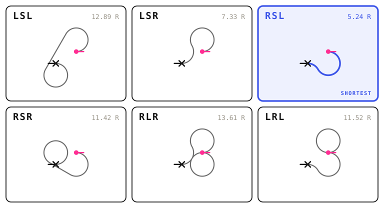
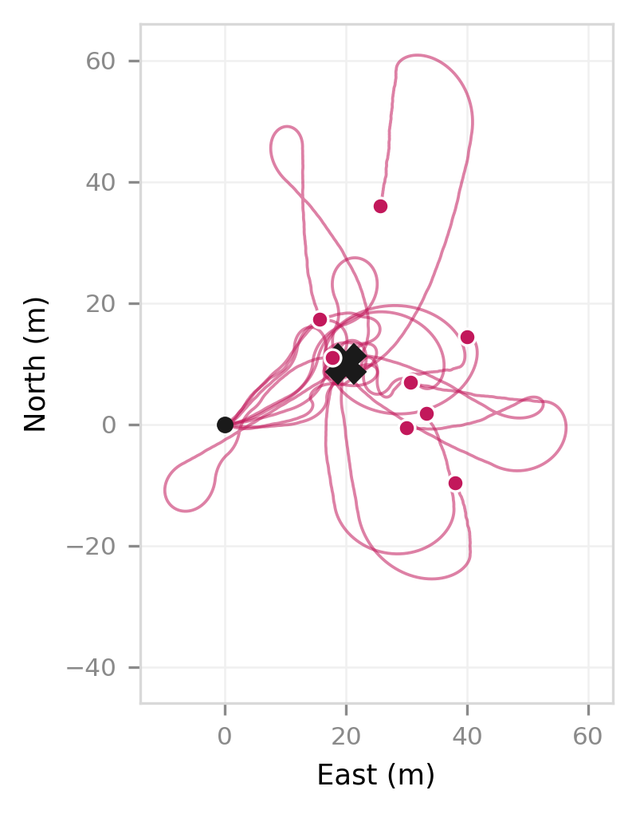
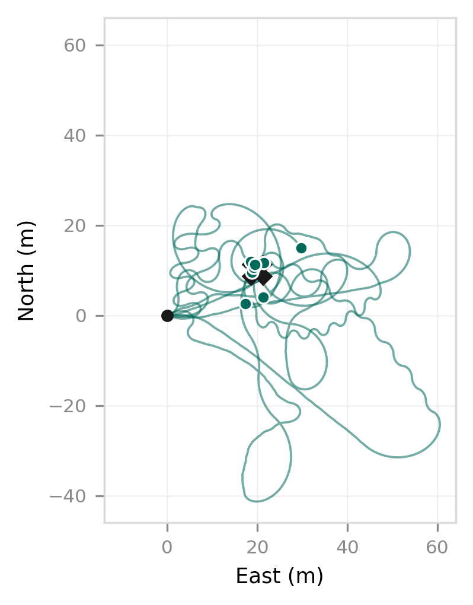

Recreational Mathematical Modelling
Trajectory
Optimisation
for a Steerable
Airdrop in
Unknown Wind
Guiding packages to a target for relief distribution, with no wind sensor on board.
Amulya D · Atomic Energy Central School, Mysuru
A cloudburst on 19 July 2026 flooded four districts of Upper Assam. 705,000 people were affected and air was the only way in.
A payload released without guidance is carried by the air mass for the whole descent. It does not aim. It drifts.
Scan 1 of 2
Watch it miss.
A drop with no idea what the wind is doing, falling in your own room. Point your phone at the floor.
How a falling box can steer at all
A wing,
not a dome.
A round parachute only falls. A parafoil is a ram-air canopy that glides forward as it descends, so pulling one side turns it. That is the only reason steering is possible.
But it cannot hover and it cannot stop. Sink rate is constant, so the moment it is released the time aloft is fixed — and with it the total distance it will ever fly.
So the path is prescribed, not minimised
The guidance does not fly the shortest route. It flies a route of exactly the right length, holding a track angle α off the bearing to stretch the remaining path by 1/cos α.
that is why it weaves spare height is spent, not saved
No wind sensor on board
It works the
wind out on
the way down.
Nothing measures the wind and nothing is sent from the ground. An Extended Kalman Filter carries four unknowns and updates them from satellite velocity alone.
Satellites give speed over the ground. The flight model gives speed through the air. The wind is the difference.
Why it has to be turning
On a fixed heading, a headwind and an airspeed that is simply too low look identical. No amount of data separates them — the state is unobservable. Turning changes the geometry and pulls them apart.
And it is turning anyway. Spending the path budget means weaving, so the manoeuvre that makes the wind observable is one the guidance was already committed to. It costs nothing.
How far it really has to fly
Six shapes,
and no more.
It cannot turn on the spot, so the true distance to the target is never the straight line. It is a curve — and the curve has a minimum radius set by the design.
In 1957 Lester Dubins proved that under exactly that constraint, the shortest path between two oriented positions is always at most three segments, in one of six orderings.

The same start (dot) and target (cross), with the same heading at each end, solved six ways at one shared scale. Computed by the model, not drawn.
Six. Not a curve you go searching for — six you can write down in closed form, evaluate all of them, and take the shortest. The model does that at every step of the descent.
That length — not the straight line — is what the path budget on panel 02 is measured against. Dubins measures; the weave spends.
Where the radius comes from
R is not free. It falls out of the same wing loading that sets the flying speed — heavier flies faster, and faster turns wider. That is the trade panel 06 is about.
Replanned every 0.05 s of the descent, so the budget is always compared against the real remaining distance, not the straight-line distance it would be tempting to use.
150 randomised drops
Does knowing
the wind help?
Identical conditions across rows. Only the wind information available to the guidance differs.
| Configuration | Median miss | 90th pct |
|---|---|---|
| No estimate | 8.57 m (6.49–12.46) | 24.27 m |
| EKF onboard | 3.89 m (2.85–5.28) | 10.75 m |
| Told the true wind | 4.62 m (3.37–5.44) | 10.93 m |
Intervals are 95% bootstrap percentile intervals on the median.

No estimate — touchdowns scattered.

EKF — touchdowns clustered on target.
Compared trial by trial, the EKF cuts the miss by a median 4.26 m (95% CI 3.08–6.57) and wins in 112 of 150 drops.
What this does not show. The EKF and true-wind intervals overlap across most of their range, so those two are not separated at this sample size. Estimating the wind on board is not shown to beat being handed it — only to beat not knowing it.
The one number that decides everything
How heavy
should it be?
To make headway against wind of speed W the canopy must fly faster than it, which forces wing loading up as W2. But turn radius rises linearly with loading — and turn radius bounds the smallest correction possible in the last seconds.
So building for wind you never encounter degrades accuracy in every condition, including dead calm. The right choice is the lowest loading that still penetrates, with margin.
And loading is set by ballast — so unlike canopy area, it can be matched to the forecast on the morning of the drop.

Every combination of wing loading and wind speed, 24 drops each.
Scan 2 of 2
Now watch it land.
Same drop, same wind — this one works the wind out on the way down and lands at your feet. The old route is the dotted line.
Not part of the poster — assembly guide
Sticking it together
Six sheets, three across and two down. Each panel is complete in itself, so nothing needs trimming and nothing crosses a join. The white border of each sheet becomes the gutter between panels.
+ scan 1
not a dome
the wind
+ scan 2
- Print pages 1–6 on A4 at “Actual size” / 100%, so the panels come out the size the layout was built for and the margins match. (The codes themselves were tested down to 70% and still scan — it is the layout that wants full size, not them.)
- Lay all six out on the backing sheet before gluing anything. Line up the tops of panels 01–03, then 04–06.
- Glue the middle sheet of the top row first and work outwards, so any error is shared between both sides instead of accumulating at one edge.
- Scan both QR codes with your own phone once the poster is up. Test under the lighting in the hall, not at home.
If a QR code will not scan
Both codes were decoded from this very PDF at every resolution from draft to 300 dpi, so the artwork is not the problem. In practice it is nearly always glare — a reflection off tape, glue or a glossy sheet, sitting across the middle of the code. Move so the light is behind you rather than behind the phone. Failing that, low ink leaves gaps in the modules: reprint that one sheet. The codes carry the highest error correction level, so a crease or a fingerprint will not stop them.
Reading order
01 sets up the problem and sends them to the first scan. 02–04 are the model: why it can steer, how it finds the wind, how far it really has to fly. 05 is the evidence, including what it does not show. 06 is the finding, and sends them to the second scan — so a judge who only reads the top row still gets the problem, the mechanism and a demonstration.
Full paper and the interactive model: 1101-hub.github.io/guided-airdrop